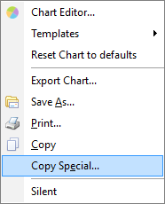
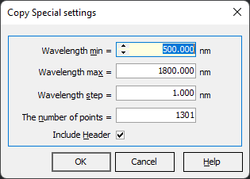
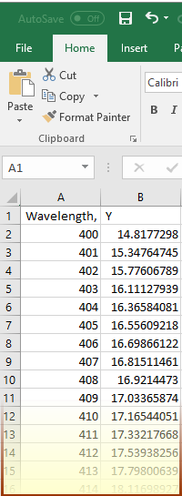

Copy Special
Copy Special
Navigation: OptiLayer Menu Commands > Edit Menu >
Copy Special
` <idh_menu_edit.html>`__ ` <idh_menu_edit.html>`__ ` <idh_column_editor.html>`__
The conventional Copy command places the information in all possible formats (graphical and text) onto the Windows clipboard when appropriate. However, sometimes numbers represented as text may not be convenient for various reasons:
Too many or not enough data points copied
The internally-generated grid may not be convenient
For more accurate control of the numerical information to be copied, it is recommended to use the Copy Special… command from the right-click menus available in most plots of OptiLayer.

The Copy Special settings dialog allows you to specify wavelength or wavenumber limits, step size, or the number of points in the dataset that will be placed on the Windows clipboard. The Include Header option controls the presence of header information in the data copied to the clipboard.

After clicking on the OK button, the data will be reevaluated at the specified grid, and the result will be available for the Paste operation, for example, in MS Excel.
